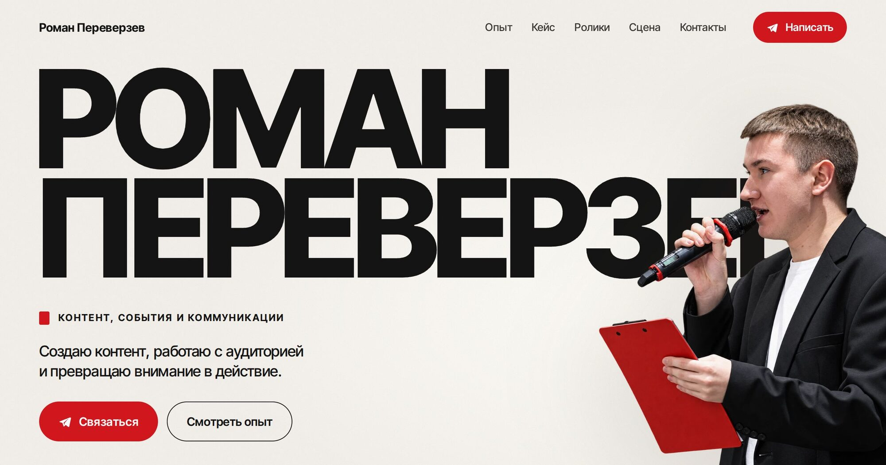

10 проектов. 10 разных характеров.
Сайты, визуальные эксперименты и интерактивные проекты — каждый со своим стилем и задачей.
- Год
- 2026
- Работ
- 10 проектов
- Направления
- Интерактив / визуал / веб

Роман Переверзев
Персональный сайт о контенте, событиях и коммуникациях — с реальными работами, фото и контактами.
Открыть проектОстальные работы

KEY/01
Яркий интерактивный showcase механической клавиатуры с 3D и анимацией.
Открыть проект
Afterimage
Экспериментальный editorial-сайт вокруг музыки, фотографии и типографики.
Открыть проект
NOCTIS
Визуальная кампания вымышленного парфюмерного бренда.
Открыть проект
NULL
Абстрактный digital-объект и эксперимент с формой, движением и WebGL.
Открыть проект
Wild Hunt
Визуальный трибьют The Witcher 3.
Открыть проект
RANKED
Концепт игрового сервиса с акцентом на каталоге и визуальном стиле.
Открыть проект
NEXUS Card
Продуктовый лендинг виртуальной карты для оплаты криптовалютой.
Открыть проект
ROUTE
Спокойный трекер посылок: реальная карта, фото товаров, статусы.
Открыть проект
FACEMAIL
Приватный почтовый клиент: входящие, папки, панель чтения, тёмная и светлая темы. Здесь — урезанная демо-версия, полная работает на facemail.site.
Открыть проектКаждый проект — отдельный характер. Код открыт.
Исходники всех работ лежат на GitHub — можно посмотреть, как всё устроено.
Все исходники на GitHub